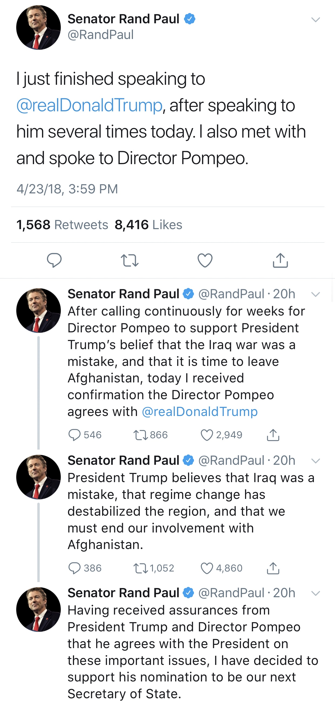

Published in The Libertarian Republic — View on TLR
DEVIN LYNCH — May 5 2018
Senator Rand Paul stated last Monday that he supported Mike Pompeo’s nomination as Secretary of State, after meeting with the former CIA Director and securing a statement that he opposes US involvement in Afghanistan and believes the Iraq war was a mistake. The Kentucky senator is an influential voice for both libertarians and liberal Republicans, and the American presence in Afghanistan is often a key issue for these groups, which generally oppose foreign intervention. Leading up to Pompeo’s confirmation hearing, Senator Paul was expected to be the deciding vote in his appointment as Secretary of State.

A member of the Tea Party movement, Pompeo previously served in the House and later as Director of the CIA. Generally regarded as a neoconservative, Pompeo has historically supported the NSA and American involvement in the Middle East. Senator Paul previously argued against Pompeo’s appointment, saying “the neocons have been so completely and regularly wrong for decades now that it’s almost unimaginable to believe they would ever be in a position to advise a president again – let alone to wield the kind of power they will have if they lead some of our nation’s most powerful institutions,” so many were surprised when the Senator pledged at the last minute to vote “yes” for his confirmation. However, Senator Paul took to Twitter to defend his decision, stating that he met with President Trump and Pompeo, securing an assurance that “we’re getting the hell out of Afghanistan” and that Trump intends to return to his original campaign pledge of a non-interventionist foreign policy.
As late as April of 2016, Trump promised a departure from the previous two administrations’ interventionist tactics, saying “our moments of greatest strength came when politics ended at the water’s edge,” and “Instead of trying to spread universal values that not everybody shares or wants, we should understand that strengthening and promoting Western civilization and its accomplishments will do more to inspire positive reforms around the world than military interventions.” It’s unclear whether the President thinks Pompeo will be instrumental in this reversal despite his past beliefs, or because of them.
As for Rand Paul, Trump seems to have expected his change of heart from the beginning. When asked about the Senator’s potential opposition, the President remarked “He’s never let me down … I have a lot of confidence in Rand” and “I have a feeling it’s going to work out very well.”
Pompeo was confirmed as Secretary of State on April 26th by a Senate vote of 57 – 42.